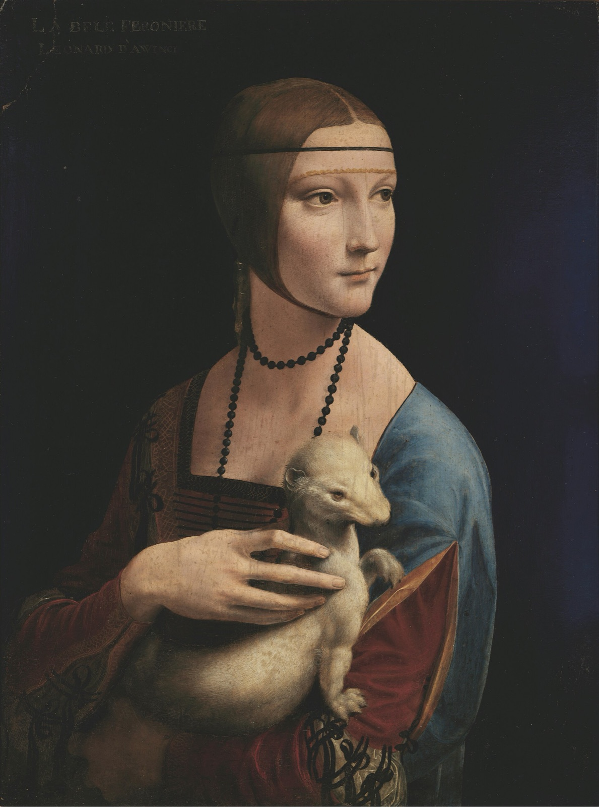

Lady with an Ermine Explained: The Duke in Her Arms
Who Cecilia Gallerani was, what the white animal in her arms may be saying, and how much of what we see is not Leonardo's at all.

For most of the 19th century, the people who owned this painting thought they knew who she was. The proof was written on the picture itself. Look at the top left corner and you will find yellow capitals: LA BELE FERONIERE, and under them LEONARD D'AWINCI. The painter's name was right. The sitter's was not.
At Puławy, the Czartoryski family's estate in Poland, the panel was taken for a portrait of "La Belle Ferronière", the favourite of the French king Francis I. The National Museum in Kraków thinks Princess Izabela Czartoryska probably made that identification from an engraving after Leonardo's portrait of a woman in the Louvre, and that the inscription records it. Even the odd W in "AWINCI" may not be a slip. The museum points out that foreign names were often Polonised in the circle of King Stanisław August, and a poem of 1790 spells Vinci the same way.
The family's own handwritten catalogues were vaguer still. They called it "Portrait of a woman" and could not agree on the animal, likening it to a marten or a dog.
The woman's real name, Cecilia Gallerani, came later. So did the realisation that the animal might be the most important person in the picture.
A teenager at the court of Milan
Cecilia Gallerani lived from about 1473 to 1536. When Leonardo painted her she was a lady-in-waiting of sixteen or seventeen, and the mistress of Ludovico Sforza, Duke of Milan. The Metropolitan Museum's catalogue of Renaissance portraits dates the affair from 1489 to about 1491 or 1492.
It could not last. Ludovico was promised to Beatrice d'Este and married her in January 1491. Cecilia gave birth to his son, Cesare, in May of that year, and mother and child were sent from court. She later married a Count Bergamino.
She was not simply a pretty face in the duke's rooms. The museum describes her as a muse and a donna docta, a learned woman, compared to Sappho, to Pericles' wife Aspasia and to Plato's student Axiothea. She wrote poetry and was known as the "light of the Italian language", though none of her verse survives.
The ermine is probably the duke
Ludovico had a nickname: Ermellino Bianco, the white ermine. The court poet Bernardo Bellincioni used it of him in verse. The name came from the Order of the Ermine, an honour conferred on him by the King of Naples in the late 1480s. (The Kraków museum gives the year as 1488. The Met's catalogue says he was inducted in 1486.)
So when a young woman is shown cradling a white ermine, the Kraków museum reads it as Leonardo's coded message. The animal can stand for the duke, and for the closeness between them. The museum goes further: it may hint that she was already carrying his child.
There are other layers. The ermine was a symbol of purity. And the Greek word for it, gale, sounds like the first syllables of Gallerani. A painter at a court that loved riddles could hardly have chosen a better pet.
Not everyone agrees on who the ermine is. In the Met catalogue, Stefan Weppelmann argues that reading the animal as Ludovico leads to "mistaken conclusions". He points to the Fiore di virtù, a book of moral lore that Leonardo owned. In it the ermine would rather be caught than soil its white coat. Its motto was "Malo mori quam foedari", better to die than be defiled. On that reading the animal is Cecilia's own nature, and the duke is the hunter. The Kraków museum allows for this too: the ermine, it says, "may also refer to Cecilia herself".
Where to look: the hand and the fur
Whichever reading you prefer, look at how the two bodies echo each other. Woman and animal turn the same way, with the same alert lift of the head, as if both have just heard someone come in.
That glance over the shoulder is the other surprise. Portraits of the time mostly showed sitters in strict profile. The Met catalogue calls her look across the shoulder "unprecedented in Italian portraiture".
Now look at her hand. It is unusually large and long-fingered, and it rests on the ermine with real weight: the fur gives under her finger. The ermine's raised front paw has an almost heraldic stiffness. And according to the Met, the white fur is the brightest spot in the whole picture, its colour caught again in her eyes.
Up at her forehead, a thin black band presses into her hair, and the light shows where it does. The light comes from a single source above and to the right, which the museum suggests may have been artificial. Her hairstyle, a long braid wrapped in a gauze veil with a gold edge, and the red dress with separate tied sleeves, were Spanish fashions that had reached the Milan court around 1490. Over her shoulder hangs a blue cloak.
The black background is not Leonardo's
The deep black that makes her face glow was added long after Leonardo. It was painted over in the 19th century. At the same time, someone reinforced the dark trim on her dress and ribbons, and retouched the hair beneath her chin.
What lies underneath, as far as studies have found, is a plain blue-grey, with no landscape or architecture. It was lighter on the right and darker on the left. The Kraków museum describes the original effect as a figure emerging from semi-darkness. Today she looks cut out against the night instead. The museum links the blackening possibly to a broken top-left corner, or to chemical changes in the paint.
The good news is in the middle of the panel. Her head, her hand and the ermine are largely untouched, which is why the museum counts this among the best-preserved of Leonardo's works.
This is where living with a picture helps. In a gallery you notice the black first and the face second. Seen every day, the eye starts to separate the two, and the face begins to look like it belongs to a softer, greyer room.
She said it no longer looked like her
The portrait had a life at court after the affair ended. Isabella d'Este, Beatrice's sister, wrote to Cecilia asking to borrow it. She wanted to compare it with some portraits by Giovanni Bellini. The Kraków museum dates the letters to 1498. (The Met catalogue puts the request a year earlier.)
Cecilia sent it, with a modest warning. The picture, she said, showed her much younger than she now was, though she was careful to praise Leonardo. Isabella returned it a month later.
After that, the portrait vanished from the record. Cecilia's portrait by Leonardo was long thought lost. Around 1900, scholars proposed that the Kraków panel was the missing picture, helped by the gale pun. Some objected that a symbol of chastity was an odd emblem for a mistress. What finally won the argument, according to the museum's catalogue, was the discovery of Ludovico's ermine nickname.
Hidden, moved and stolen
The panel's travels read like a thriller. Adam Jerzy Czartoryski, son of Princess Izabela, bought it in Italy around 1800. From 1809 it hung in the Green Room of the Gothic House at Puławy.
In 1831, after the November Uprising, it was taken from Puławy and hidden: first at Klemensów, then at Sieniawa, then in Paris. It spent the following decades out of sight at the Hôtel Lambert. In 1882 it moved to the Czartoryski Museum in Kraków.
During the First World War it was deposited for safety in Dresden, together with the family's Raphael and Rembrandt, and returned to Kraków in 1920.
In September 1939 the Nazis looted all three, meaning the Leonardo for Hitler's planned museum at Linz. The governor-general Hans Frank kept the Leonardo through the war, probably at Wawel. A special military mission found it in Bavaria, and in 1946 it came home with the Rembrandt. The Raphael did not.
Today it is the only painting by Leonardo in a Polish collection: a walnut panel of 53.4 × 39.3 cm, small enough to hold.
Living with Cecilia
At about three-quarters as wide as it is tall, the portrait is far narrower than a 16:10 Mac screen. artbip keeps the whole panel in view, over a blurred version of itself, so nothing is cropped: not the yellow inscription at the top left, not the ermine's paw. At desktop size the face, the hand and the white fur read beautifully against the black. Give it a few days and you will start to spot the small things, like the band pressing into her hair. The app also carries a longer note on the painting for when you want the story again.
Sources
- Lady with an Ermine – National Museum in Kraków
- Leonardo da Vinci, Portrait of Cecilia Gallerani (Lady with an Ermine), MNK XII-209 – National Museum in Kraków online catalogue
- Keith Christiansen and Stefan Weppelmann (eds.), The Renaissance Portrait: From Donatello to Bellini (Metropolitan Museum of Art, 2011)
- Peter Humfrey, Painting in Renaissance Venice (Yale University Press, 1995)